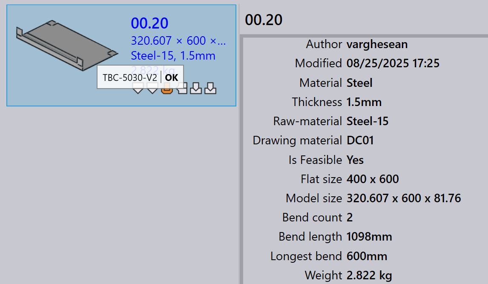

Routes
Lisans\u0131n\u0131za ba\u011fl\u0131 olarak, TruSmartCAM varsay\u0131lan bir CAM makine seti ve y\u00f6nlendirme yap\u0131land\u0131rmalar\u0131na sahip olacakt\u0131r. Bu yap\u0131land\u0131rmalar\u0131, \u00f6zel \u00fcretim i\u015f ak\u0131\u015flar\u0131n\u0131za uyacak \u015fekilde \u00f6zelle\u015ftirebilirsiniz.

Routes sayfas\u0131nda, makineler her biri bir resim ve ad ile tan\u0131mlanan i\u015fleme istasyonlar\u0131 olarak temsil edilir.
Rotalar istasyonlar\u0131 ba\u011flar ve bir par\u00e7an\u0131n ba\u015flang\u0131\u00e7tan biti\u015fe kadar takip edebilece\u011fi olas\u0131 i\u015f ak\u0131\u015f\u0131 yollar\u0131n\u0131 g\u00f6sterir. Fare ile bir istasyon \u00fczerine gelerek istasyon \u00f6zelliklerini g\u00f6r\u00fcnt\u00fcleyebilirsiniz.
Bir istasyona t\u0131klamak, ad\u0131, t\u00fcr\u00fc ve kullan\u0131labilirlik durumu dahil olmak \u00fczere o istasyon hakk\u0131nda ayr\u0131nt\u0131l\u0131 bilgiler i\u00e7eren bir panel a\u00e7ar.
-
\u0130stasyon kullan\u0131labilirli\u011fini d\u00fczenlemek i\u00e7in istasyona t\u0131klay\u0131n ve paneldeki _Etkinleştirildi onay kutusunu de\u011fi\u015ftirin.
Y\u00f6nlendirme yap\u0131land\u0131rmalar\u0131n\u0131 d\u0131\u015fa aktar/i\u00e7e aktar
Export/Import \u00f6zelli\u011fi, kullan\u0131c\u0131lar\u0131n mevcut y\u00f6nlendirme yap\u0131land\u0131rmalar\u0131n\u0131 kaydetmelerine ve bunlar\u0131 di\u011fer projelere veya \u00f6rneklere uygulamalar\u0131na olanak tan\u0131r.

CAD rotalar\u0131n\u0131 d\u0131\u015fa aktar
T\u00fcm mevcut rota ko\u015ful kural\u0131n\u0131 bir CSV dosyas\u0131na kaydetmek i\u00e7in Export CAD routes… se\u00e7ene\u011fine t\u0131klay\u0131n.

CSV, malzemeleri ve bunlar\u0131n y\u00f6nlendirme ko\u015fullar\u0131n\u0131 listeler. S\u00fctunlar, makine adlar\u0131n\u0131 ve ko\u015fullar\u0131 temsil eder (\u00f6rn. Material, SpecialTool, HasBend, MaxBendLength). 1 de\u011feri bir makineye y\u00f6nlendirme yap\u0131ld\u0131\u011f\u0131n\u0131 g\u00f6sterir; bo\u015f h\u00fccre y\u00f6nlendirme olmad\u0131\u011f\u0131 anlam\u0131na gelir.
Bu CSV’yi de\u011fi\u015ftirebilir ve sisteme yeniden aktarabilirsiniz.
CAD rotalar\u0131n\u0131 i\u00e7e aktar
De\u011fi\u015ftirilmi\u015f bir CSV dosyas\u0131n\u0131 uygulamak i\u00e7in Import CAD routes… se\u00e7ene\u011fini kullan\u0131n.
| \u0130\u00e7e aktarmadan \u00f6nce, mevcut yap\u0131land\u0131rmalar\u0131 temizlemek i\u00e7in Reset CAD routes \u00e7al\u0131\u015ft\u0131r\u0131n. |
Sistem dosyay\u0131 okur ve rota ko\u015fullar\u0131n\u0131 g\u00fcnceller. Kurallar, HasBend ve MaxBendLength gibi ko\u015fullar i\u00e7erebilir.

E\u011fer HasBend = 1 ise, kural b\u00fck\u00fcmler i\u00e7eren par\u00e7alar i\u00e7in ge\u00e7erlidir.
E\u011fer MaxBendLength =1 ise, kural par\u00e7an\u0131n en uzun b\u00fck\u00fcm uzunlu\u011funa g\u00f6re daha da s\u0131n\u0131rlar.
Par\u00e7a 00.13, 500 mm’lik en uzun b\u00fck\u00fcme sahiptir. \u0130lk kuralla e\u015fle\u015fir, bu nedenle TBC-5030-V2 hari\u00e7 tutulur.

Par\u00e7a 00.20, 600 mm’lik en uzun b\u00fck\u00fcme sahiptir. \u0130lk kuralla e\u015fle\u015fmez ve ikinci kural\u0131 takip ederek t\u00fcm makinelere y\u00f6nlendirilir.

CAD rotalar\u0131n\u0131 s\u0131f\u0131rla
Yeni bir CSV i\u00e7e aktarmadan \u00f6nce t\u00fcm mevcut yap\u0131land\u0131rmalar\u0131 temizlemek i\u00e7in Reset CAD routes se\u00e7ene\u011fini kullan\u0131n.
| S\u0131f\u0131rlama yapmadan i\u00e7e aktar\u0131rsan\u0131z, eski kurallar yeni kurallarla \u00e7at\u0131\u015fabilir. |